Présentation
Le Serveur MCP permet de poser des questions en langage courant sur les données de l’entreprise (ventes, stock, comptabilité…) à un assistant d’intelligence artificielle : Microsoft Copilot, Claude, ChatGPT ou tout autre outil compatible avec le protocole MCP (Model Context Protocol).
L’assistant consulte lui-même la base de données à travers le serveur, puis vous répond : tableau, synthèse, comparaison, graphique… Vous n’avez pas besoin de connaître le langage SQL.
Vous
Vous posez une question à votre assistant : « Quelles sont nos 10 meilleures ventes du mois ? »
Assistant IA
Copilot, Claude ou ChatGPT interroge le Serveur MCP avec votre autorisation.
Serveur MCP
Vérifie vos droits, consulte la base (en lecture seule le plus souvent) et renvoie le résultat.
Les notions à connaître
| Terme | Signification |
|---|---|
| Connexion | Une base de données rendue accessible par le serveur, par exemple « Ventes et facturation ». Chaque connexion a sa propre URL MCP. |
| URL MCP | L’adresse à donner à votre assistant, de la forme https://luxewtey.com/mcpsolid/mcp/…. Elle n’est pas secrète : sans votre autorisation, elle ne donne accès à rien. |
| Autorisation | La première fois, l’assistant vous envoie sur la page du serveur : vous vous connectez et cliquez sur Autoriser. L’assistant agit ensuite en votre nom, avec vos droits. |
| Lecture seule | L’assistant peut consulter les données, mais pas les modifier. C’est le mode recommandé, et le plus courant. |
| Administrateur | Personne qui crée les comptes, déclare les bases de données et décide qui accède à quoi. |
Se connecter : le parcours en 5 étapes
Pour interroger une base de données depuis votre assistant, vous suivez une seule fois le parcours ci-dessous. Seule la première étape revient à l’administrateur.
| Étape | Qui | Ce qu’il faut faire | Où |
|---|---|---|---|
| 1 | Administrateur | Crée votre compte, vous envoie l’invitation par e-mail et vous attribue les bases dont vous avez besoin. | Onglet Utilisateurs (voir 7.2) |
| 2 | Vous | Ouvrez l’e-mail d’invitation et choisissez votre mot de passe. | Lien de l’e-mail (2.1 et 2.2) |
| 3 | Vous | Connectez-vous avec votre e-mail et votre mot de passe. | https://luxewtey.com/mcpsolid (2.3) |
| 4 | Vous | Copiez le lien MCP de la base à interroger. | Mes connexions → Copier (2.4) |
| 5 | Vous | Ajoutez ce lien à votre assistant, puis cliquez sur Autoriser. | Copilot, Claude ou ChatGPT (2.5 et chapitre 4) |
Ensuite, vous posez vos questions directement dans votre assistant. Vous ne revenez sur l’interface que pour récupérer le lien d’une nouvelle base, changer votre mot de passe ou gérer vos autorisations.
Recevoir l’invitation
Un administrateur crée votre compte avec votre adresse e-mail. Vous recevez alors un message intitulé « Votre invitation au Serveur MCP ».
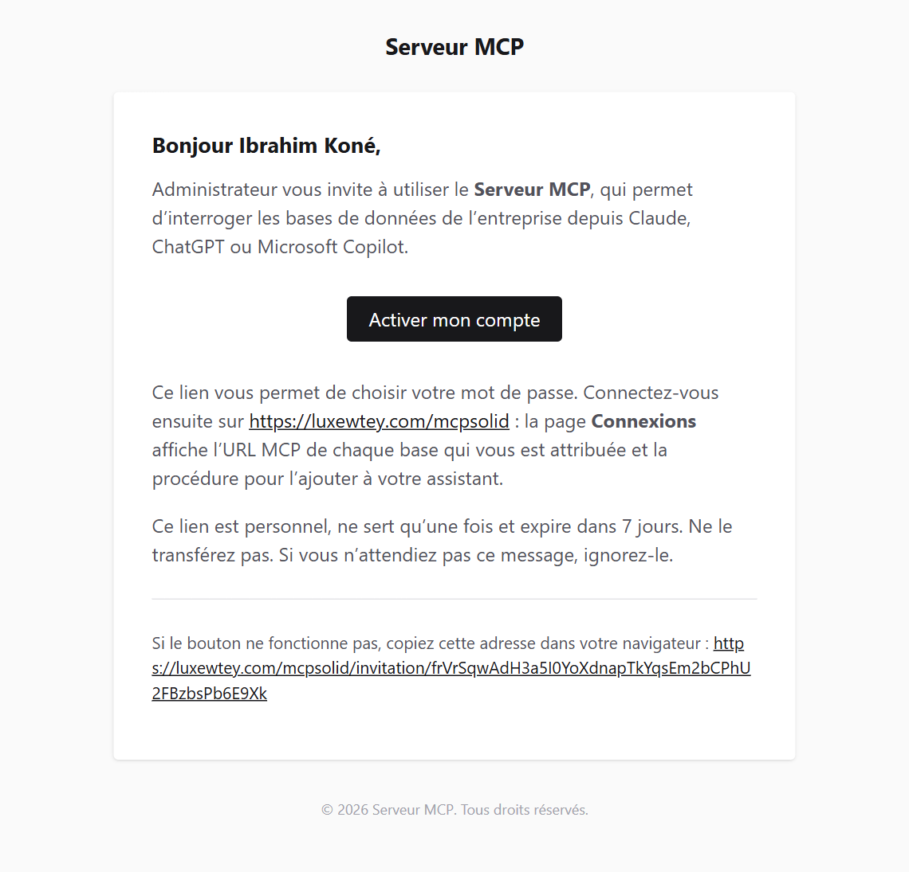
Important.Le lien est personnel, ne sert qu’une seule fois et expire après 7 jours. Ne le transférez à personne. S’il a expiré, demandez à un administrateur de vous renvoyer l’invitation. Pensez à vérifier le dossier des courriers indésirables.
Choisir votre mot de passe
- Cliquez sur Activer mon compte dans l’e-mail.
- Choisissez un mot de passe d’au moins 10 caractères, puis confirmez-le.
- Cliquez sur Activer mon compte : vous êtes connecté et arrivez sur la liste de vos connexions.
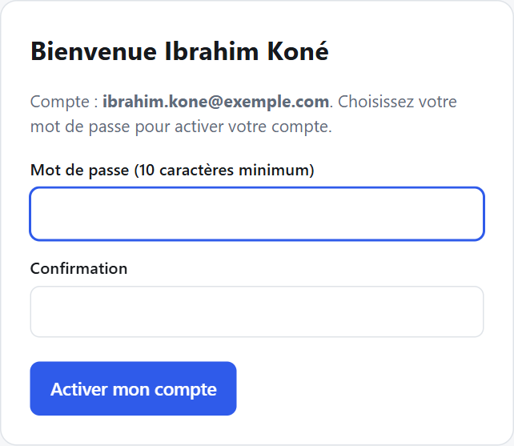
Se connecter à l’interface
- Ouvrez
https://luxewtey.com/mcpsoliddans votre navigateur. Ajoutez cette adresse à vos favoris. - Saisissez votre e-mail (c’est votre identifiant) et votre mot de passe.
- Cliquez sur Se connecter : vous arrivez sur la page Mes connexions.
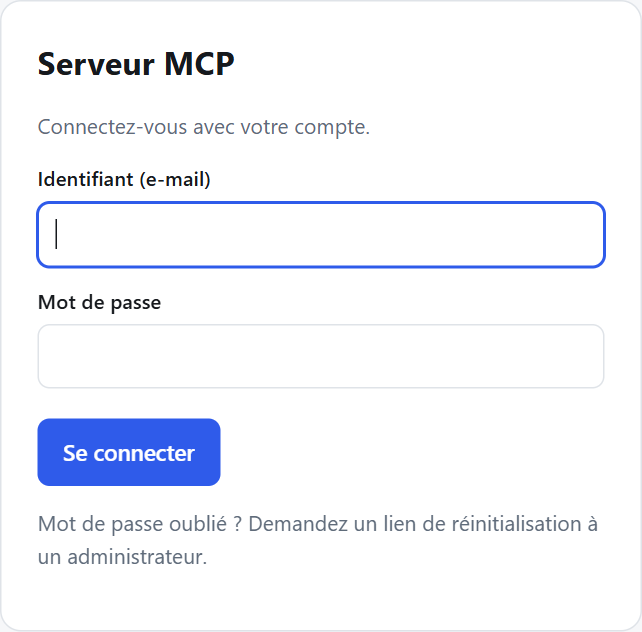
- Mot de passe oublié : demandez à un administrateur un lien de réinitialisation, que vous recevrez par e-mail.
- Trop d’essais erronés : la connexion est bloquée pendant 15 minutes par mesure de sécurité.
- Pour vous déconnecter : bouton Déconnexion en haut à droite.
Copier le lien MCP d’une base
- Sur la page Mes connexions, repérez la base à interroger (par exemple « Ventes et facturation »).
- Cliquez sur Copier, à droite de son adresse
https://luxewtey.com/mcpsolid/mcp/…: c’est son lien MCP. - Le bouton Ajouter à un assistant affiche la procédure détaillée pour chaque assistant.
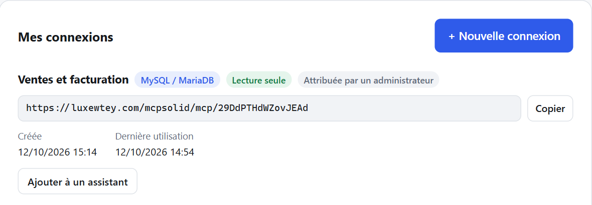
Une base dont vous avez besoin n’apparaît pas ? Demandez à un administrateur de vous l’attribuer : elle apparaîtra aussitôt dans la liste.
Connecter votre assistant
| Assistant | En bref (détails au chapitre 4) |
|---|---|
| Microsoft Copilot | Ouvrez l’agent de la base publié par l’entreprise dans Copilot ou Teams, posez une question, puis cliquez sur Se connecter. |
| Claude | Paramètres → Connecteurs → Ajouter un connecteur personnalisé, collez le lien MCP, puis Se connecter. |
| ChatGPT | Paramètres → Applications et connecteurs (mode développeur) → Créer, collez le lien MCP, authentification OAuth. |
Dans tous les cas, la page du Serveur MCP s’ouvre : connectez-vous avec votre compte et cliquez sur Autoriser (voir 4.5). C’est fait : posez vos questions.
Vos connexions
L’onglet Mes connexions liste les bases auxquelles vous avez accès : celles qu’un administrateur vous a attribuées.
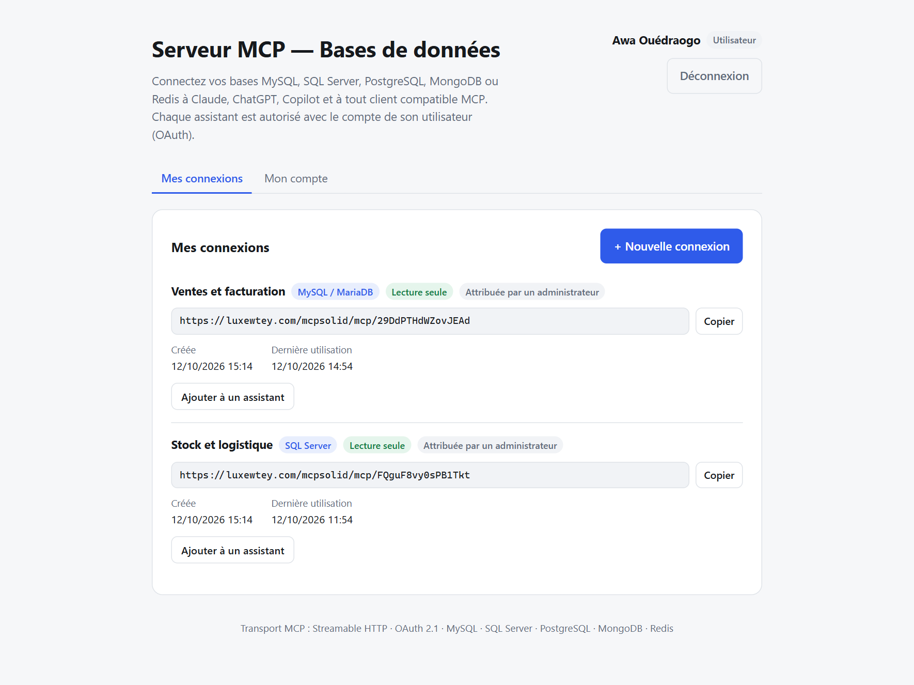
Lire une connexion
| Élément | Signification |
|---|---|
| MySQL / MariaDB SQL Server | Type de base de données. |
| Lecture seule / Écriture | Ce que l’assistant a le droit de faire. En « Écriture », il peut modifier des données : il doit vous demander confirmation avant chaque modification. |
| Attribuée par un administrateur | Base qui vous a été attribuée ; seul un administrateur peut la modifier. |
| Expirée | La connexion avait une date d’expiration, désormais dépassée : elle ne fonctionne plus. |
| URL + bouton Copier | L’adresse à coller dans votre assistant. |
| Ajouter à un assistant | Ouvre la page détaillant la procédure pour chaque assistant. |
Si la liste est vide, demandez à un administrateur de vous attribuer les connexions dont vous avez besoin.
Ajouter une connexion à votre assistant
Cliquez sur Ajouter à un assistant à côté de la connexion voulue. La page affiche l’URL MCP et, par onglet, la procédure propre à chaque assistant : Microsoft Copilot (onglet ouvert par défaut), Claude, ChatGPT, Claude Code, Cursor. Cette opération se fait une fois par connexion et par assistant.
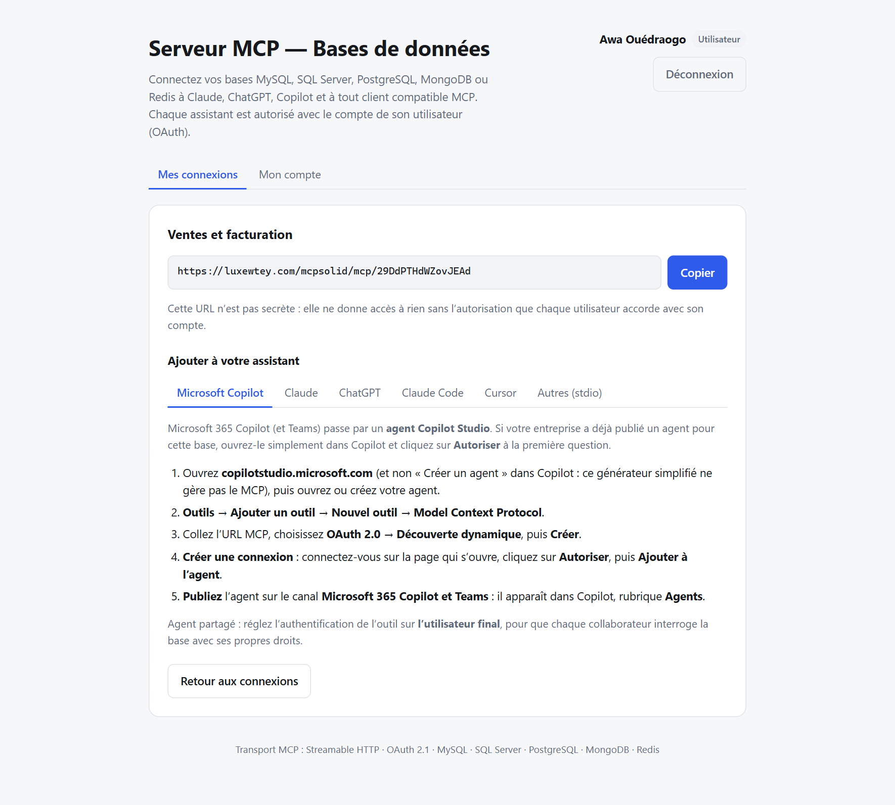
Microsoft Copilot (Microsoft 365 Copilot et Teams)
Microsoft Copilot ne se branche pas directement sur une URL MCP : il utilise un agent créé dans Copilot Studio, auquel on ajoute le Serveur MCP comme outil. En pratique :
- un administrateur (ou un créateur d’agents) crée l’agent une seule fois pour une base et le publie dans Microsoft 365 Copilot ;
- chaque collaborateur ouvre ensuite cet agent dans Copilot et autorise son propre compte lors de la première question.
Créer l’agent (une fois)
- Ouvrez copilotstudio.microsoft.com avec votre compte professionnel et vérifiez, en haut à droite, que l’environnement de l’entreprise est sélectionné.
- Créez un agent dédié à la base (+ Créer → Nouvel agent), par exemple « Assistant Ventes ». Dans ses Paramètres → IA générative, choisissez l’orchestration générative.
- Onglet Outils → + Ajouter un outil → + Nouvel outil → Model Context Protocol.
- Renseignez un nom (« Base Ventes »), une description qui aide l’IA à savoir quand utiliser l’outil (« Interroge la base Ventes en lecture seule : tables, structure, requêtes ») et l’URL MCP copiée depuis le serveur.
- Authentification : OAuth 2.0 → Découverte dynamique, puis Créer.
- Créer une connexion : la page du Serveur MCP s’ouvre ; connectez-vous et cliquez sur Autoriser (voir 4.5). Cliquez ensuite sur Ajouter à l’agent.
- Dans les paramètres de l’outil, réglez l’authentification sur l’utilisateur final : chaque collaborateur interrogera la base avec ses droits, et non avec ceux du créateur de l’agent.
- Testez dans le volet Tester (« Quelles tables contient la base Ventes ? »), puis Publiez et ajoutez le canal Microsoft 365 Copilot et Teams.
Agent Builder ou Copilot Studio ?Le bouton « Créer un agent » de Microsoft 365 Copilot ouvre Agent Builder, une version simplifiée qui n’a pas d’onglet Outils et ne gère pas le MCP. Utilisez Copilot Studio (copilotstudio.microsoft.com). Une licence ou un essai Copilot Studio peut être nécessaire, ainsi que le droit de créer des connecteurs personnalisés dans l’environnement.
Instructions conseillées pour l’agent.« Tu réponds aux questions sur la base Ventes. Commence par lister les tables et décrire celles qui sont utiles avant d’écrire une requête. Présente les résultats sous forme de tableau et indique la période ou les filtres utilisés. »
Utiliser l’agent (chaque collaborateur)
- Dans Microsoft 365 Copilot (application Copilot, Teams ou Outlook), ouvrez l’agent depuis la liste des Agents (ou via Obtenir des agents s’il n’y figure pas encore).
- À la première question, Copilot demande de vous connecter : cliquez sur Se connecter ou Autoriser. La page du Serveur MCP s’ouvre : connectez-vous avec votre compte et cliquez sur Autoriser.
- Posez vos questions directement dans la conversation avec l’agent.
Vous devez avoir accès à la connexion sur le Serveur MCP (connexion attribuée par un administrateur) : sinon, l’agent répond que vous n’avez pas accès à cette base.
Claude (claude.ai ou Claude Desktop)
- Dans Claude, ouvrez Paramètres → Connecteurs.
- Cliquez sur Ajouter un connecteur personnalisé, donnez-lui un nom (par exemple « Ventes ») et collez l’URL MCP.
- Cliquez sur Se connecter : la page du Serveur MCP s’ouvre. Connectez-vous, puis cliquez sur Autoriser (voir 4.5).
- Dans une conversation, activez le connecteur depuis le menu Outils (ou « Rechercher et outils »).
Selon votre abonnement Claude, l’ajout de connecteurs personnalisés peut être réservé aux propriétaires de l’espace de travail. Rapprochez-vous de votre administrateur si l’option n’apparaît pas.
ChatGPT
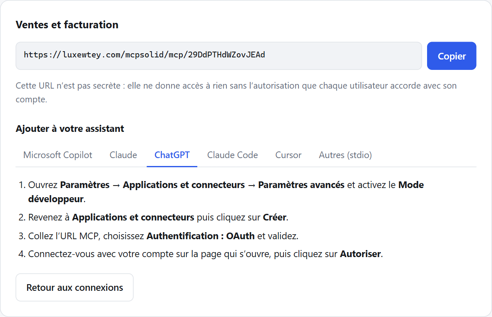
- Ouvrez Paramètres → Applications et connecteurs → Paramètres avancés et activez le Mode développeur.
- Revenez à Applications et connecteurs, puis cliquez sur Créer.
- Collez l’URL MCP, choisissez Authentification : OAuth et validez.
- Connectez-vous sur la page qui s’ouvre, puis cliquez sur Autoriser.
Les intitulés des menus de ChatGPT et de Copilot évoluent régulièrement ; l’onglet correspondant de la page du serveur indique la procédure à suivre.
Autres outils
| Outil | Procédure (détaillée dans l’onglet correspondant) |
|---|---|
| Claude Code | Commande claude mcp add --transport http …, puis /mcp → Authenticate. |
| Cursor | Bloc à ajouter dans ~/.cursor/mcp.json, puis Login dans les réglages MCP. |
| Autres (stdio) | Pour les outils qui ne gèrent pas les serveurs distants : passerelle mcp-remote (nécessite Node.js). |
L’écran « Autoriser l’accès »
Lors du premier branchement, l’assistant ouvre cette page du Serveur MCP. Elle indique quel assistant demande l’accès, quelle connexion et avec quel compte.
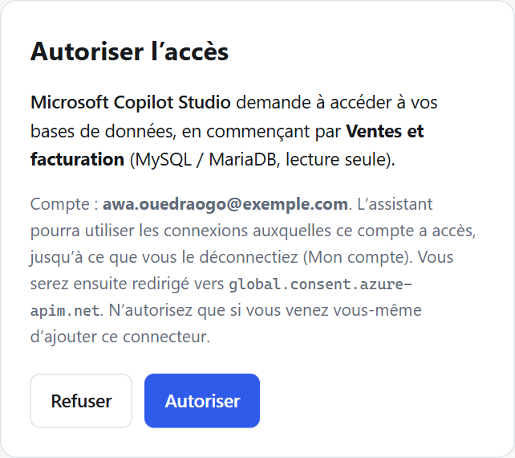
- Autoriser : l’assistant peut utiliser, en votre nom, les connexions auxquelles vous avez accès. Vous revenez ensuite dans l’assistant.
- Refuser : aucun accès n’est accordé.
N’autorisez que ce que vous venez de demander.Si cette page s’affiche alors que vous n’êtes pas en train d’ajouter un connecteur, cliquez sur Refuser et prévenez un administrateur.
L’autorisation reste valable tant que vous l’utilisez (elle est renouvelée automatiquement). Vous pouvez la retirer à tout moment depuis Mon compte.
Poser des questions sur les données
Une fois la connexion ajoutée et activée, posez simplement vos questions dans la conversation. L’assistant explore d’abord la structure de la base (tables, colonnes), puis construit les requêtes nécessaires.
Exemples de questions
Pour découvrir une base
- « Quelles informations contient la base Ventes ? »
- « Décris-moi la table des factures. »
- « Quels sont les liens entre clients, commandes et produits ? »
Pour analyser
- « Quel est le chiffre d’affaires par mois en 2026 ? »
- « Quels sont nos 10 meilleurs clients cette année ? »
- « Quels articles sont sous le seuil de réapprovisionnement ? »
- « Compare les ventes du trimestre avec le même trimestre l’an dernier, sous forme de tableau. »
Conseils pour de bonnes réponses
- Précisez le périmètre : période, agence, pays, type de produit…
- Demandez le format voulu : tableau, liste, synthèse, graphique, fichier CSV.
- Vérifiez les chiffres importants : demandez à l’assistant d’afficher la requête utilisée ou le détail du calcul. Une IA peut se tromper dans l’interprétation d’une colonne.
- Procédez par étapes sur les sujets complexes : d’abord comprendre les données, ensuite les analyser.
Limites à connaître
| Limite | Conséquence |
|---|---|
| Nombre de lignes par réponse | Chaque requête renvoie au plus 200 lignes (valeur réglée par connexion). Pour de gros volumes, demandez des totaux ou des regroupements plutôt que des listes complètes. |
| Lecture seule | Toute tentative de modification est refusée par le serveur, même si l’assistant essaie. |
| Durée des requêtes | Une requête trop longue (plus de 30 secondes) est interrompue : affinez la question. |
| Connexions en écriture | L’assistant doit vous demander confirmation avant toute modification. Lisez attentivement ce qu’il propose avant d’accepter. |
Confidentialité.Les résultats des requêtes sont transmis à l’assistant que vous utilisez (Copilot, Claude, ChatGPT) pour qu’il puisse vous répondre. N’utilisez que les assistants validés par l’entreprise, avec un compte professionnel.
Votre compte
L’onglet Mon compte regroupe :
- Assistants autorisés : les applications (Claude, ChatGPT…) qui peuvent interroger vos connexions en votre nom, avec la date de la dernière autorisation. Le bouton Déconnecter retire immédiatement l’accès ; l’assistant devra être autorisé de nouveau.
- Changer mon mot de passe : mot de passe actuel, puis nouveau mot de passe (10 caractères minimum).
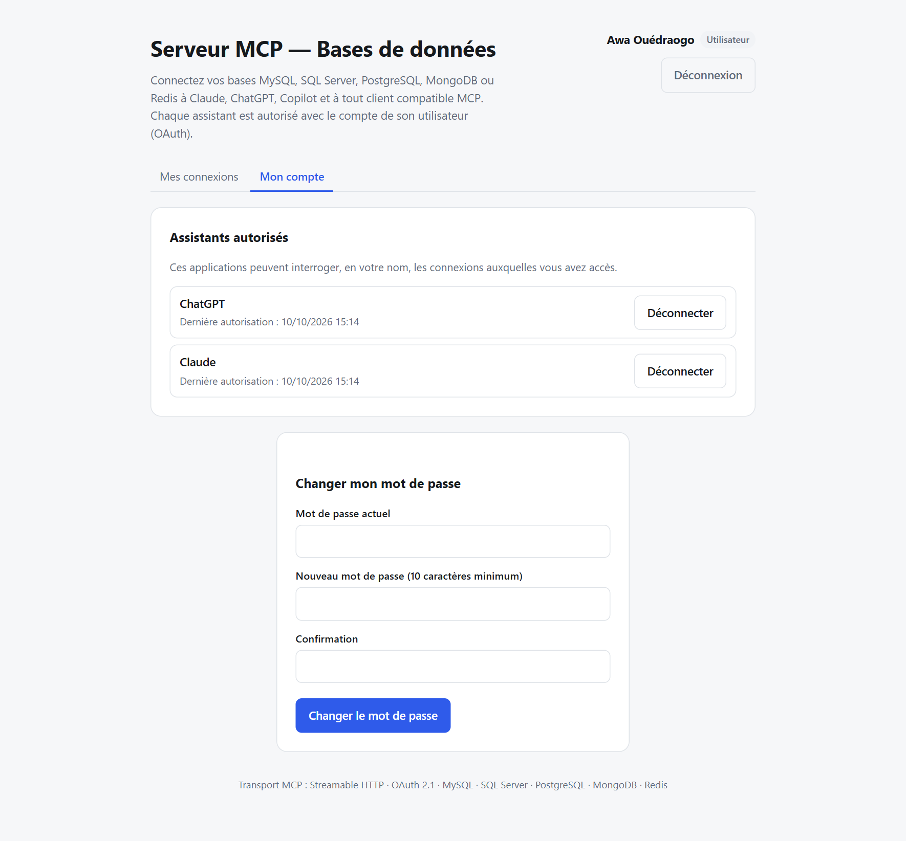
Déconnectez un assistant que vous n’utilisez plus, ou en cas de doute (ordinateur perdu, compte d’assistant partagé par erreur…).
Administration (administrateurs)
Les administrateurs voient l’onglet supplémentaire Utilisateurs et l’ensemble des connexions.
Rôles
| Administrateur | Utilisateur | |
|---|---|---|
| Connexions visibles | Toutes | Celles qui lui sont attribuées |
| Déclarer, modifier, supprimer une connexion | Oui | — |
| Attribuer une connexion | Oui | — |
| Gérer les comptes | Inviter, réinitialiser, nommer administrateur, désactiver, supprimer, déconnecter les assistants | Son mot de passe et ses assistants |
Inviter un utilisateur
- Onglet Utilisateurs → saisissez l’e-mail (et le nom, facultatif).
- Cliquez sur Créer et envoyer l’invitation. L’utilisateur reçoit le lien d’activation par e-mail.
- Si l’e-mail n’arrive pas, ouvrez Afficher le lien et transmettez-le par un canal de confiance (messagerie interne, en main propre).
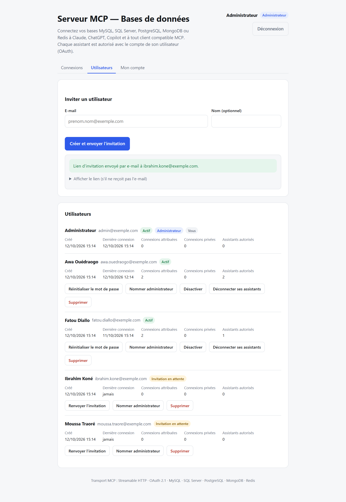
Selon la situation, un bandeau indique le résultat de l’envoi :
- vert l’e-mail est parti ;
- rouge l’envoi a échoué (problème de messagerie) : transmettez le lien affiché et prévenez l’équipe informatique ;
- orange l’envoi d’e-mails n’est pas configuré sur le serveur : transmettez le lien affiché.
Gérer les comptes
| Action | Effet |
|---|---|
| Renvoyer l’invitation | Nouveau lien (l’ancien devient invalide), envoyé par e-mail. |
| Réinitialiser le mot de passe | Envoie un lien pour choisir un nouveau mot de passe. L’ancien reste valable jusqu’à l’utilisation du lien. |
| Nommer administrateur / Retirer le rôle admin | Change le rôle du compte. |
| Désactiver / Réactiver | Désactiver coupe immédiatement les sessions et tous les assistants du compte. |
| Déconnecter ses assistants | Révoque toutes les autorisations d’assistants du compte. |
| Supprimer | Supprime définitivement le compte et ses accès. |
Un administrateur ne peut ni modifier son propre rôle, ni se désactiver, ni se supprimer : cela évite de se retrouver sans administrateur.
Déclarer une base de données
Onglet Connexions → + Nouvelle connexion. Utilisez de préférence un compte de base de données en lecture seule, fourni par l’équipe informatique.
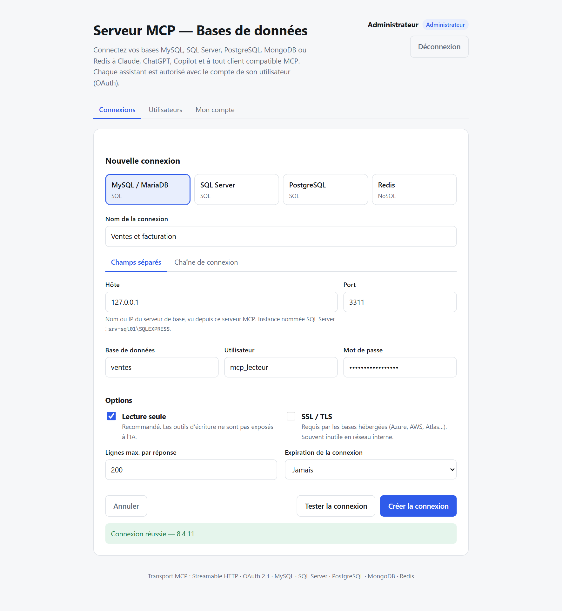
- Choisissez le type de base : MySQL / MariaDB, SQL Server, PostgreSQL, Redis (et MongoDB si le serveur le permet).
- Nommez la connexion de façon explicite, par exemple « Comptabilité (production) ».
- Renseignez les paramètres transmis par l’équipe informatique : hôte, port, base de données, utilisateur, mot de passe. Vous pouvez aussi coller une chaîne de connexion complète (onglet du même nom).
- Options : laissez Lecture seule cochée sauf besoin explicite ; cochez SSL / TLS pour les bases hébergées dans le cloud ; ajustez le nombre maximal de lignes ; fixez éventuellement une date d’expiration.
- Cliquez sur Tester la connexion : le message « Connexion réussie » doit s’afficher avec la version du serveur.
- Cliquez sur Créer la connexion : son URL MCP s’affiche, prête à être attribuée.
Les mots de passe enregistrés sont chiffrés et ne sont jamais réaffichés. Lors d’une modification, laissez le champ vide pour conserver le mot de passe existant. Modifier une connexion conserve son URL et les autorisations des assistants.
Attribuer l’accès aux utilisateurs
Une nouvelle connexion n’est utilisable que par les administrateurs tant qu’elle n’est attribuée à personne.
- Dans l’onglet Connexions, dépliez Gérer l’accès sous la connexion.
- Cochez les utilisateurs concernés, puis cliquez sur Enregistrer.
- La base apparaît aussitôt dans leur page Mes connexions, avec son lien MCP.
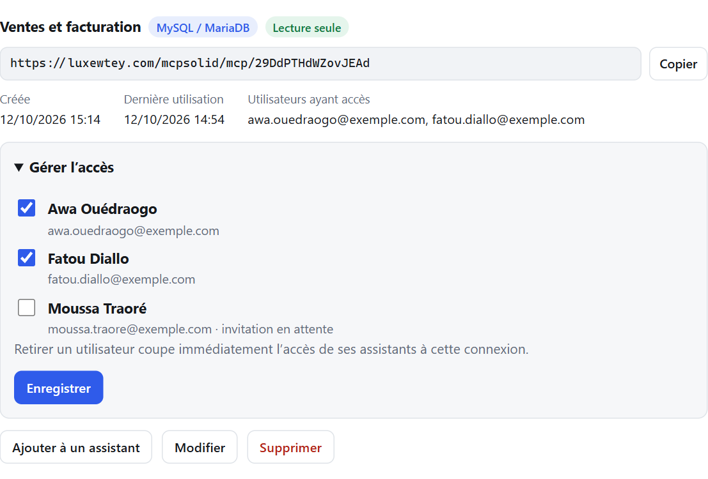
Retirer un utilisateur prend effet immédiatement : ses assistants ne peuvent plus interroger cette connexion dès la requête suivante.
Supprimer une connexion
Le bouton Supprimer efface définitivement la connexion : son URL MCP cesse de fonctionner pour tous les assistants. Pour une suspension temporaire, retirez plutôt les utilisateurs dans Gérer l’accès.
Questions fréquentes et problèmes
| Situation | Que faire |
|---|---|
| Je n’ai pas reçu l’e-mail d’invitation | Vérifiez les courriers indésirables, puis demandez à un administrateur de renvoyer l’invitation ou de vous transmettre le lien affiché à l’écran. |
| « Lien invalide » sur la page d’invitation | Le lien a expiré (7 jours) ou a déjà servi. Demandez un nouveau lien. |
| J’ai oublié mon mot de passe | Demandez un lien de réinitialisation à un administrateur. |
| « Trop de tentatives » | Attendez 15 minutes avant de réessayer. |
| Ma liste de connexions est vide | Aucune connexion ne vous est attribuée : contactez un administrateur. |
| L’assistant indique « Vous n’avez pas (ou plus) accès à cette connexion » | L’accès vous a été retiré ou votre compte est désactivé. Contactez un administrateur. |
| L’assistant indique « Cette connexion a expiré » | La date d’expiration est passée ; un administrateur doit recréer la connexion. |
| L’assistant redemande une autorisation | Normal après une déconnexion depuis « Mon compte », un changement de droits ou une longue inactivité (plus de 30 jours). Reconnectez-vous et cliquez sur Autoriser. |
| « Erreur : … » dans la réponse de l’assistant | La base a refusé la requête (syntaxe, droits, délai). Reformulez la question ; si le problème persiste, signalez le message exact à l’équipe informatique. |
| « Résultat tronqué » | La réponse était trop volumineuse : demandez un regroupement, un filtre ou moins de colonnes. |
| Copilot : pas d’onglet « Outils » dans mon agent | Vous êtes dans Agent Builder (« Créer un agent » de Microsoft 365 Copilot). Ouvrez l’agent dans Copilot Studio (copilotstudio.microsoft.com). Si l’onglet est masqué, élargissez la fenêtre ou ouvrez le menu « +N » au bout des onglets. |
| Copilot Studio : « Failed to login … invalid_redirect_uri » | Le domaine de retour de Microsoft n’est pas autorisé sur le serveur : un administrateur doit l’ajouter (MCP_REDIRECT_DOMAINS, voir la documentation technique). |
| Le test de connexion échoue | Vérifiez l’hôte, le port, le compte et le mot de passe. Le serveur de base doit être joignable depuis le Serveur MCP (pare-feu). Pour SQL Server avec instance nommée : serveur\INSTANCE. |
Bonnes pratiques de sécurité
- Gardez votre mot de passe pour vous et choisissez-le long (une phrase de passe, par exemple).
- N’autorisez un assistant que lorsque vous venez de l’ajouter vous-même.
- Utilisez des comptes professionnels pour les assistants (Copilot, Claude, ChatGPT) validés par l’entreprise.
- Préférez la lecture seule. N’activez l’écriture qu’en cas de besoin réel, et relisez chaque modification proposée par l’assistant.
- Déconnectez les assistants inutilisés depuis « Mon compte ».
- Signalez toute activité inhabituelle à un administrateur.
Bon à savoir.Le serveur vérifie vos droits à chaque question posée par l’assistant. Retirer un accès, désactiver un compte ou déconnecter un assistant prend effet immédiatement.